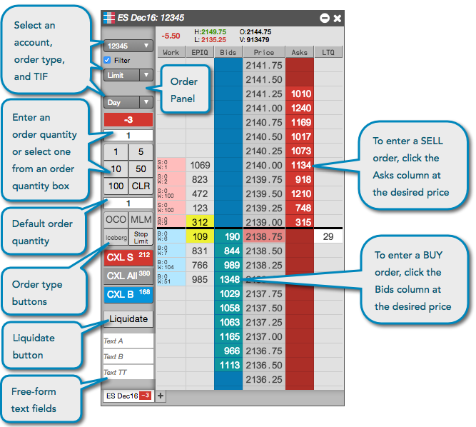
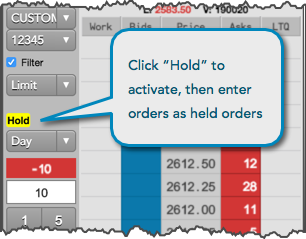

In MD Trader, you can easily configure an order, and quickly and safely enter the order for an instrument with a single click.

Before configuring and entering an order, configure the following parameters in MD Trader:
To enter an order in MD Trader:
You can also use custom action buttons to select a native order type, TIF, or TT order type.
Enter an order quantity: Type in a value, use your default order quantity, or click one of the quantity buttons. A quantity is required for submitting orders on TT
If needed, use the CLR button to clear the quantity field to enter a new quantity.
If desired, right-click in the order placement columns to enter an order using your second default order quantity.

When trading, left-click a custom TT order type button to quickly seed an order type with an assigned template of predefined default order parameters without displaying the order parameter flyout panel. The button remains active until you de-select it with a left or right-click, select a different order type, or have Reset order type to Limit after each order enabled in the MD Trader settings.
Note: If the "Default" order parameters are used, meaning no specific template is assigned to the custom TT order type button, then the order parameter flyout is displayed when you left-click the button.
When you right-click a custom TT order type button, it automatically sets the order type and displays the order parameter flyout panel. The panel is only displayed when you select a TT order type from the main order type selector, right-click a custom TT order type button, or click the edit button in the Order Entry Panel.